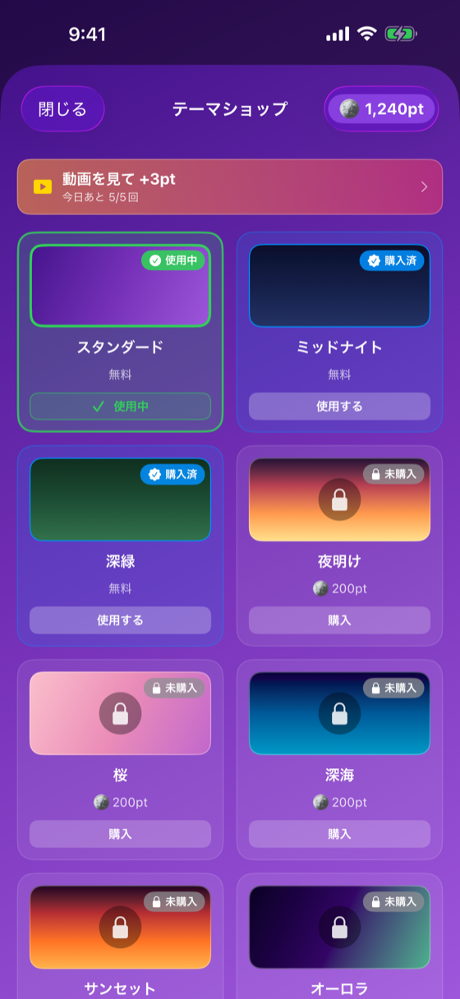

背景グラデーションテーマの選択・購入（アプリ 1.0.14 で廃止。以下は廃止前の記録）
アプリ 1.0.14 (27)（2026-10-23・TestFlight 配信済み・未公開）でこの画面は廃止した。 配色を「ひだまり」1つに作り直したため、テーマの選択・購入は無くなった。

無料3種・有料11種の合計14テーマから選択できる画面（v1.0.5 で「ベージュ」を追加し14テーマに）。 有料テーマは 200コイン で購入。動画ボーナスからコインを獲得して購入を促す設計。
| 要素 | 種類 | 説明 |
|---|---|---|
| コインバッジ | HStack | 現在のコイン残高 |
| 動画ボーナスボタン | Button | +3pt獲得（1日5回まで） |
| テーマカード | LazyVGrid | 各テーマのプレビュー（グラデーション） |
| 状態バッジ | Overlay | 4状態を色別バッジ＋鍵アイコンで表示（下記参照） |
| 購入/適用ボタン | Button | 状態に応じてラベル変化 |
| 状態 | バッジ | 背景色 | アイコン |
|---|---|---|---|
| 使用中 | 「使用中」 | 青 | checkmark.circle |
| 購入済（未適用） | 「購入済」 | 緑 | checkmark |
| 無料 | 「無料」 | グレー | （なし） |
| 未購入 | 「200pt」 | オレンジ | lock.fill |
| 状態 | 表示内容 |
|---|---|
| 無料テーマ | 「適用」ボタン |
| 未購入有料 | 「200コインで購入」ボタン |
| 購入済（未適用） | 「適用」ボタン |
| 使用中 | 「使用中」表示（ボタン無効） |
| 残高不足（1.0.13） | 購入ボタンは押せるままラベルが「あとXpt」に。押すとアラート「ptが足りません」＋「あとXptで購入できます」と貯め方（動画を見て +3pt〔1日5回まで〕・毎日のログイン +1pt・今日のクイズの正解 +1〜3pt） |
AppThemeItem {
let id: String
let name: String
let cost: Int // 0 or 200
let colors: [Color]
let begin: UnitPoint
let end: UnitPoint
}
ThemeService {
func getSelectedTheme() -> AppThemeItem
func setSelectedTheme(id: String)
func getUnlockedThemeIds() -> [String]
func purchaseTheme(id: String) -> Bool
}cost: 0 で常時アンロック| バージョン | 日付 | 変更内容 |
|---|---|---|
| 1.0 | 2026-05-09 | 初版作成 |
| 1.1 | 2026-05-17 | v1.0.5: 「ベージュ」テーマ追加（計14テーマ）、状態バッジ4種、動画ボーナスボタンを追加 |
| 1.2 | 2026-05-25 | v1.0.7: 価格表記「枚」→「pt」に統一（カード価格・購入確認ボタン・購入確認メッセージの3箇所） |
| 1.3 | 2026-10-21 | アプリ 1.0.13（未公開・2026-10-21）: ポイント不足でも購入ボタンを押せるようにし「あと何pt・どう貯めるか」を案内、動画ボーナスの文言を変更、テーマ変更でウィジェットの色も更新（DT-010・DT-012） |
| 1.4 | 2026-10-23 | アプリ 1.0.14 (27)（未公開）: 画面を廃止。冒頭に廃止の告知・返金と新しいポイントの使い道への案内を追加（本文は廃止前の記録として残す） |